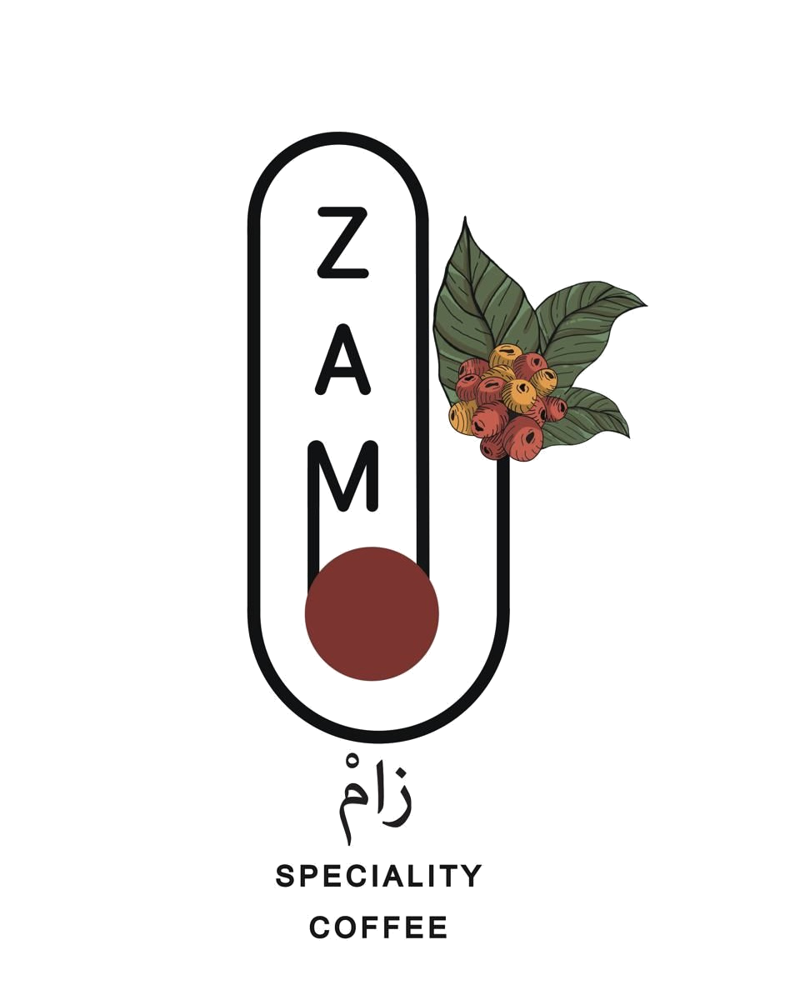

التقرير الأسبوعي لإدارة التشغيل
نظام زام للعمليات · تقرير إداري معتمد للطباعة
مدير التشغيل: مدير التشغيل · البريد: — · الهاتف: —
التقرير الأسبوعي لإدارة التشغيل
مقهى زام المختص — ينبع · operations@zam.sa · 0563505653
sync جارٍ التحميل…
schedule المزامنة تلقائية
الفترة
←
الفروع
الشفت
monitoring المؤشرات الرئيسية
لا توجد بيانات مسجلة في هذه الفترة
مصدر البيانات
يُعرض التقرير من بيانات Supabase المتاحة للمستخدم المالك. عند عدم وجود بيانات، شغّل المزامنة من Google Apps Script ثم اضغط «تحديث».
show_chart اتجاه المبيعات اليومية
الفترة الحالية
السابقة
donut_small أسباب الهدر
bar_chart المبيعات حسب الفرع — مقارنة بالفترة السابقة
اضغط على أي فرع لعرض تفصيله
fact_check نسبة الالتزام بكل قوائم المهام المسندة
history النسخ المحفوظة من التقارير
كل ضغطة على «حفظ نسخة التقرير» تحفظ الأرقام والتعليقات كما هي في جدول weekly_reports داخل Supabase، لتبقى مرجعاً تاريخياً عند اعتماد التقرير.